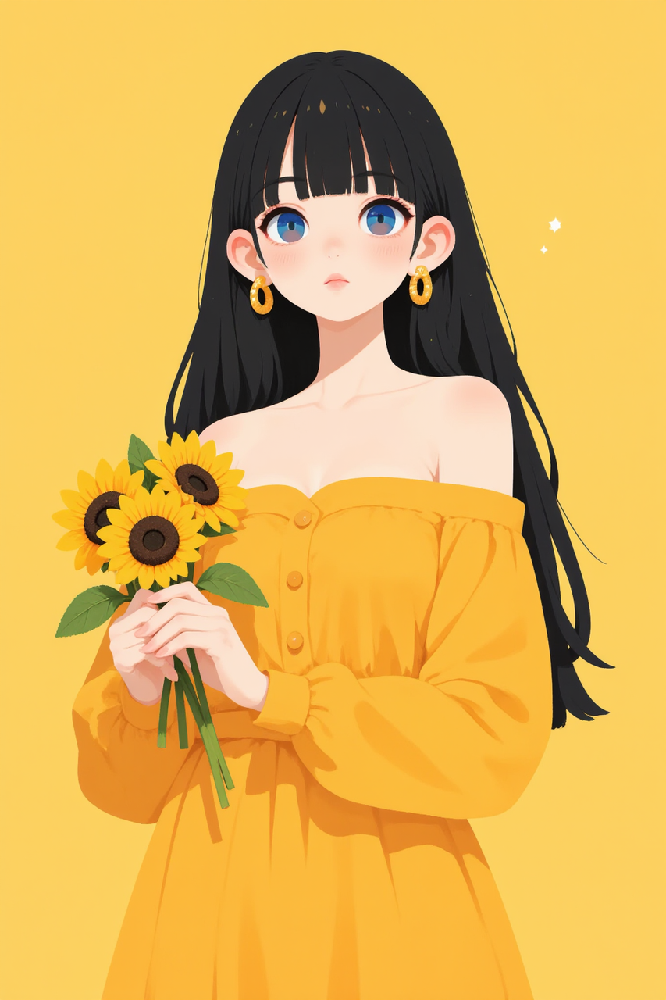
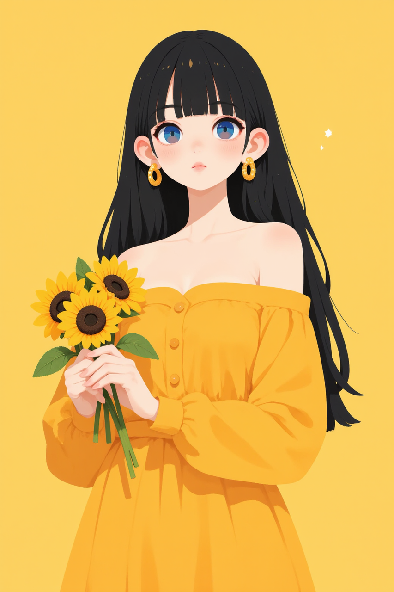
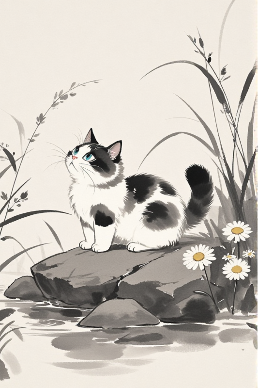
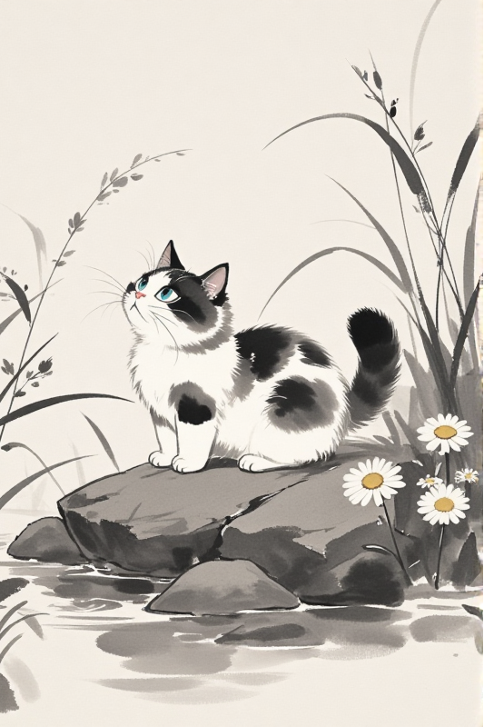
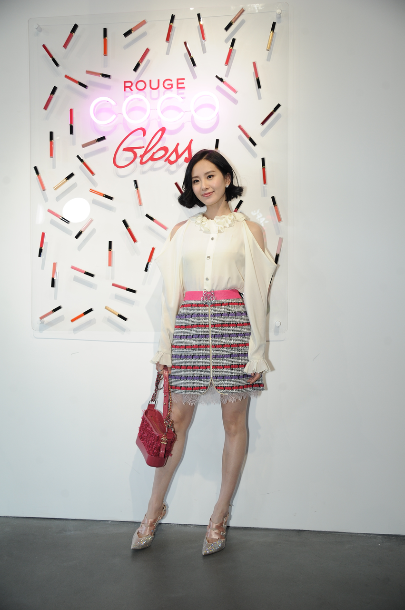
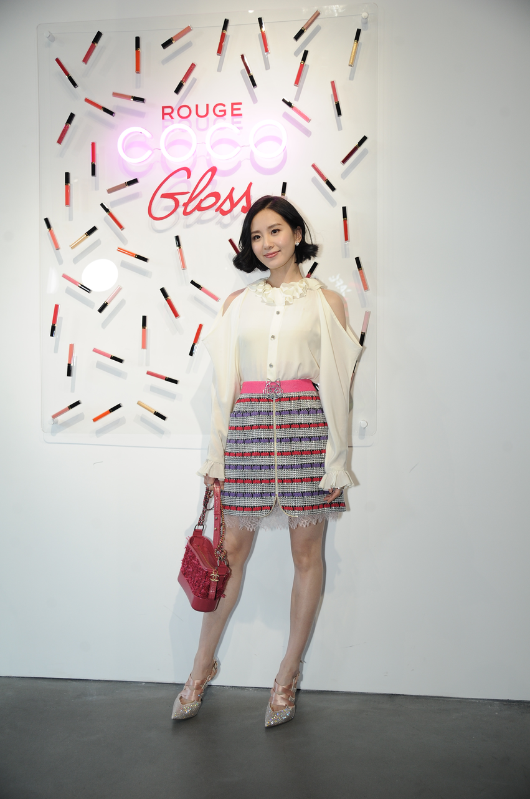

OmniGen2: Exploration to Advanced Multimodal Generation

OmniGen2 is a unified multimodal generation model that combines strong visual understanding, text-to-image synthesis, instruction-based image editing, and subject-driven in-context generation within a single framework. Built on a decoupled architecture, it preserves high-quality language modeling while enabling fine-grained and consistent visual outputs. Beyond generation, OmniGen2 incorporates a multimodal reflection mechanism that allows it to analyze, critique, and iteratively refine its outputs—bringing reasoning and self-correction into the image generation process. With competitive performance across both generation and understanding tasks, it sets a new benchmark among lightweight open-source models.

A cat with a crown lounging on a velvet throne
A dark wizard conjuring spells in an ancient cave
The sun rises slightly, the dew on the rose petals in the garden is clear, a crystal ladybug is crawling to the dew, the background is the early morning garden, macro lens
A fierce wolf walks in a broadleaf forest, next to a stream, detail true, photography

A cat holds a white board writing text "OmniGen2" and a red heart
A rabbit made out of vegetables
This dreamlike digital art captures a vibrant, kaleidoscopic bird in a lush rainforest

Colorful and extremely beautiful aurora shines on the ice sheet
A snow maiden with pale translucent skin, frosty white lashes, and a soft expression of longing
 

Change the dress to blue
Raise the hand
Change the background to classroom
Add a fisherman hat to the woman's head
Replace the sword with a hammer
 

Remove the cat
 

Generate an anime-style figurine based on the original image

Make he smile
Extract the character from the picture and fill the rest of the background with white
Let the girl and the boy get married in the church


Add the bird from image 1 to the desk in image 2


In a cozy café, the anime figure is sitting in front of a laptop, smiling confidently.
Let the man appear in front of the White House delivering a speech


Please let the person in image 2 hold the toy from the first image in a parking lot
Let the man form image1 and the woman from image2 kiss and hug

Replace the woman in the second image with the woman from the first image
Create a wedding figure based on the girl in the first image and the man in the second image. Set the background as a wedding hall, with the man dressed in a suit and the girl in a white wedding dress. The man should adopt a realistic style, whereas the girl should maintain their classic anime style.


Make the girl pray in the second image
OmniGen2 adopts a dual-path architecture with separate autoregressive and diffusion Transformers for text and image generation, respectively. It leverages a decoupled design where a ViT encoder feeds visual information into the multimodal large language model (MLLM) for understanding tasks, while a VAE encoder supplies fine-grained visual features exclusively to the diffusion decoder. This separation preserves the strong language modeling capabilities of the MLLM while enabling high-fidelity and consistent image generation, making the architecture both efficient and versatile across tasks like text-to-image synthesis, image editing, and in-context generation.

Multimodal Rotary Position Embedding: We introduce a novel Omni-RoPE specifically designed to meet the demands of our diverse and complex tasks, particularly image editing and in-context generation as illustrated in Figure 2.

It decomposes position information into three components:
This dual mechanism enables the model to unambiguously distinguish different images via their unique \(id_{seq}\), while the shared local spatial coordinates enhance consistency for tasks like image editing.
OmniGen2 leverages a powerful multimodal large language model (MLLM) to perform robust visual understanding across diverse image types. By using a ViT encoder for image representation and keeping the MLLM largely frozen, it achieves strong performance on standard benchmarks while preserving semantic alignment, object recognition, and reasoning capabilities across text and vision inputs.
OmniGen2 supports high-quality text-to-image generation with strong compositional reasoning and long prompt following. By conditioning a diffusion-based image decoder on hidden states from the language model and fine-grained visual features from a VAE, it generates faithful and coherent images that align closely with complex natural language descriptions.
The model enables precise and localized image editing based on natural language instructions. With dedicated editing datasets and a dual-path architecture, OmniGen2 can make fine-grained modifications—such as object manipulation, style changes, or motion edits—while preserving unedited regions and maintaining visual realism and consistency.
OmniGen2 excels at subject-driven generation, where it extracts subjects from reference images and re-renders them in new scenes as guided by text prompts. Through a specially designed training pipeline based on video data, the model demonstrates superior subject consistency and contextual integration, outperforming prior open-source models in this emerging domain.
A distinctive feature of OmniGen2 is its built-in reflection mechanism, allowing it to evaluate its own outputs, identify shortcomings, and generate improved results through iterative refinement. This capability, powered by a combination of image-text analysis and self-correction training, brings a form of multimodal reasoning to generation—enhancing controllability, reliability, and output quality over time.

If you find this repository or our work useful, please consider giving a star ⭐ and citation 🦖, which would be greatly appreciated (OmniGen2 report will be available as soon as possible):
@misc{omnigen2024,
author={Shitao Xiao, Yueze Wang, Junjie Zhou, Huaying Yuan, Xingrun Xing, Ruiran Yan, Shuting Wang, Tiejun Huang, Zheng Liu},
title={OmniGen: Unified Image Generation},
publisher={arXiv:2409.11340v1},
year={2024},
}